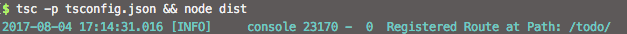

For this project, we will be building a simple TODO list api server, with CRUD abilities. You can download the source code at https://github.com/t2ee/tutorial-series-1
Preperation
To get our hands sweaty, first we need to setup some basic dependencies and environment.
npm i typescript reflect-metadata @t2ee/core @t2ee/sl4js @t2ee/validation @t2ee/vdaer koa@2
These are all the packages we are gonna be using for this tutorial. also don’t forget to create a tsconfig.json, with experimentalDecorators and emitDecoratorMetadata enabled.
If you do not already have one or not familar with typescript yet, following is an good start.
1
2
3
4
5
6
7
8
9
10
11
12
13
14
15
{
"compilerOptions": {
"module": "commonjs",
"outDir": "./dist",
"target": "ES6",
"experimentalDecorators": true,
"emitDecoratorMetadata": true,
"declaration": true,
"sourceMap": true
},
"compileOnSave": false,
"include": [
"src/**/*.ts"
]
}
Objectives
For the first part of this tutorial, we are building two routes first. GET /todo and GET /todo/:id.
The first one will return the list of all todo items, and the second returns an item that matches the id.
First Controller
First, let’s prepare logger.yaml, which will be read by @t2ee/sl4js to configure loggers and formats.
To move on with this tutorial, we will not be discussing the details of loggin configurations here today, other tutorials will be covering it.
Now, let’s code our controller, which will be responsible how requests are handled.
First import all components we will be using.
1
2
3
4
5
6
7
8
9
import {
GET,
Path,
Response,
PathParam,
} from'@t2ee/vader';
import {
Component,
} from'@t2ee/core';
@GET and @Path define routes. Response is the object you will be returning at the end of request. @PathParam is used to acquire parameters in path. @Component needs to be added to class to trigger bindings, otherwise, none of the above would work.
1
2
3
4
5
6
7
8
9
10
11
@Path('/todo')
@Component
exportdefaultclass Controller {
@GET
@Path('/')
async getList(): Promise<Response> {
const response = new Response();
response.body = LIST;
return response;
}
}
let’s also define a local variable to store todo items in memory.
1
2
3
4
5
6
7
let LIST = [{
id: 0,
name: 'a',
}, {
id: 1,
name: 'b',
}];
So now we have our class and first route.
In order to run the controller, we also need to have an entry file to register our controller into the router, see index.ts
Now run tsc -p tsconfig.json && node dist, this will compile all the source codes and start the server.
You should be able to see something like below

Now navigate your brower to http://localhost:8080/todo, you should be able to all the todo items.
Add Another Route
Now we want to access single todo items by id, @PathParam comes in for us to get id from path.
1
2
3
4
5
6
7
8
9
10
11
@GET
@Path('/:id')
async getItem(@PathParam('id') id) {
id = parseInt(id);
const item = LIST.find(todo => todo.id === id);
if (item) {
const response = new Response();
response.body = item;
return response;
}
}
This will be able to handle path like /todo/1.
If you want to take id from query, you can change the first route to following (don’t forget to import QueryParam form @t2ee/vader).